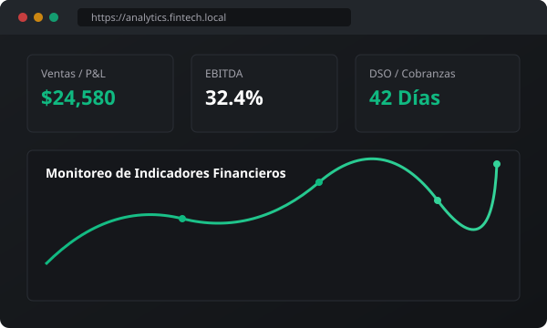
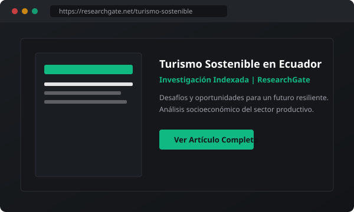
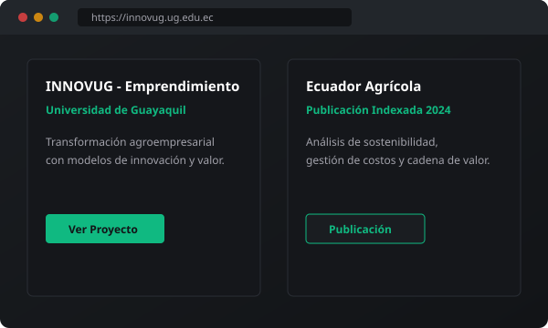

Dashboard Financiero Corporativo
Plataforma de visualización para monitoreo de resultados (P&L), KPIs operativos (EBITDA, DSO, DPO) y conciliación presupuestaria integral para toma de decisiones directivas.
Selección de artículos académicos publicados, iniciativas de innovación y paneles analíticos.

Plataforma de visualización para monitoreo de resultados (P&L), KPIs operativos (EBITDA, DSO, DPO) y conciliación presupuestaria integral para toma de decisiones directivas.

Artículo científico publicado en ResearchGate sobre desafíos y oportunidades para un futuro resiliente en el sector turístico de Ecuador, integrando sostenibilidad económica y ambiental.

Investigación académica desarrollada como Miembro Ejecutivo Emprendedor en el Centro de Emprendimiento INNOVUG (Universidad de Guayaquil), enfocada en innovación y transformación sostenible.